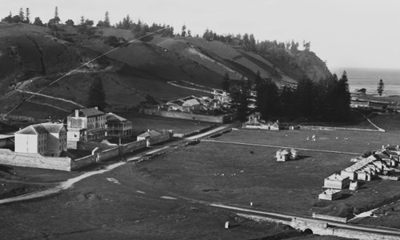
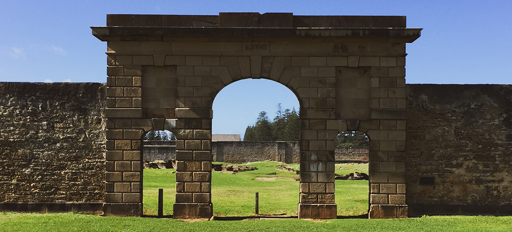

Introduction
Brief introduction to KAVHA
The Kingston and Arthurs Vale Historic Area (KAVHA) is of outstanding significance to the nation as a convict settlement spanning the era of transportation to eastern Australia between 1788 and 1855.
Europeans were not the first people to inhabit Norfolk Island. Stone tools found at both Emily and Slaughter Bays within KAVHA indicate that Polynesian settlement of the area occurred between AD 1200 and AD 1600.
Visited by Captain James Cook in 1774, Norfolk Island was settled on 6 March 1788, six weeks after the First Fleet landed in Sydney. A settlement was established at Kingston, with crops sown in the adjoining valley, Arthurs vale. To relieve the food pressures in the infant colony of New South Wales, Governor Philip relocated around one-third of Sydney's population to Kingston.
Both convicts and free settlers farmed small holdings of land. The first settlement's population peaked at 1156 in May 1792. By 1804, the free settlers on the island significantly outnumbered the convicts who represented 23 per cent of the total population of 1804. Abandoned in 1814, the settlement's buildings were destroyed.
In 1825, the island was re-occupied to provide secondary punishment of convicts. Secondary punishment was designed to revive the fear of transportation and deter crime in Britain and the colonies. it was a sentence applied to transported convicts who re-offended in the colony.
KAVHA developed a reputation as one of the harshest and cruellest of Australia's penal settlements. The worst of the convict population from both New South Wales and van Diemen’s Land were sent to Norfolk Island. They were men who had become so brutalised by the system that ever increasing levels of punishment only served to make them more recalcitrant.
Alexander Maconochie, commandant of Norfolk Island, brought a humanising regime of reform to the second settlement period for four of its 30 years. He introduced the Merits System of Penal Discipline, which worked on the principle that the prisoner could secure freedom if they were industrious and well-behaved. For a number of reasons, including the fact that his superiors disapproved of his reformist actions, his initiatives failed.
The latter stages of the second settlement saw prisoners arriving direct from Britain to serve the first stage of their punishment under the new probation system introduced in 1843. The severity of the place continued and a critical report to the British Parliament helped bring an end to the island's use as a penal settlement. it was gradually closed between 1847 and 1855.
After this, the Pitcairn island descendants of the Bounty mutineers had outgrown their island home, and the British Government chose to resettle them on Norfolk Island. The whole Pitcairn community landed at Kingston Pier on 8 June 1856. Their descendants, who today comprise nearly a third of Norfolk Island's population, still speak the Pitcairn language.